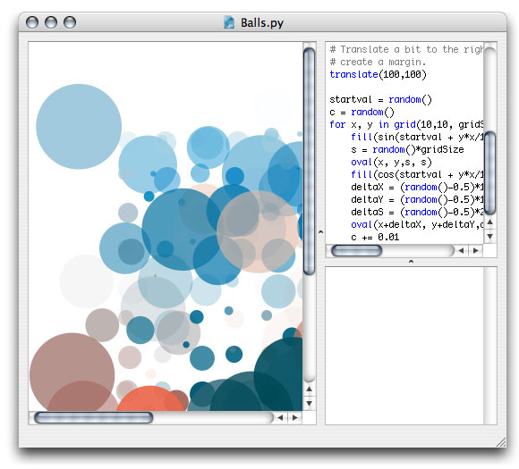
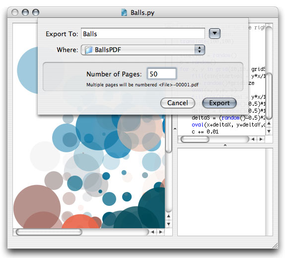
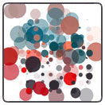
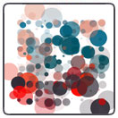
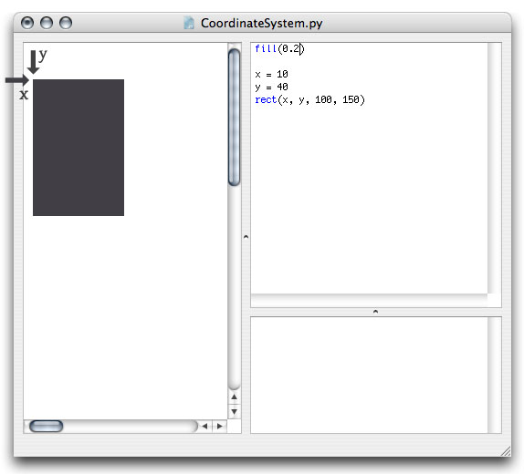

Environment
NodeBox is a Mac OS X application in which you can write Python scripts, programming code, that produces visual output you can save as a PDF, an image or a Quicktime movie animation. Each script opened in NodeBox has a separate window divided into three parts.

Code, output, and messages
The three parts are for code, output, and messages:
The code you write goes in the top right area. Any keywords are automatically colored (for example, all of the NodeBox commands in the reference).
Once you have a script going, you can press apple-R to have NodeBox examine your script and generate visual output, in the left area. Don't hesitate to press apple-r as often as you like, seeing what output your script produces is the best way to learn what it does.
The lower right area is for messages: remarks that NodeBox has about any errors in your script, or any output from the print command. NodeBox isn't very bright when it comes to analysing your code - it's a computer program, and only recognises commands and statements when they are written in exactly the right way (or syntax).
Errors in scripts are common, and you will encounter a lot of them at first. Errors are an unavoidable part of the programmatic design process. Don't let them discourage you - instead, find out what is going wrong in your script so you won't make the same mistake next time.
Exporting
Once you are satisfied with the output of your script, you can export it to one or more PDF's or images: press apple-E (or choose Export to Image from the File menu). Here you can select the number of pages you want to export. Each page results in a separate PDF or image document. For each page, NodeBox reruns the script - this is especially useful if your script contains random() commands, since the output will then be different for each page.

A multiple-page export of this example script generates random output. This is an important part of the NodeBox-philosophy: you define the general style of the output in your script, while having the option to retain a range of freedom in which choices are left up to NodeBox. In this way, you can quickly develop a consistent style that looks different each time, quickly test and asses your creations.
A different composition of ovals could be used on each page, with the same ease as creating only a single page:
 
PDF documents can be opened in Adobe Illustrator (for example), where you can ungroup the composition and transform and scale the individual elements without loss of quality.
Saving
When you save your work, you save the script, not the output. In fact, you save the recipe or template style. You can open your script again later on, make changes, or apply it to different shapes or images for example. The script is a piece of your way-of-working stored on disk. Moreover, the script takes much less space on disk than the actual output.
The coordinate system
When you place an element on the canvas, you define its positions in terms of x and y coordinates. The x is the horizontal position measured from the left of the canvas, the y the vertical position measured from the top.
NodeBox has an inverted coordinate system which might be confusing to DrawBot users. In math going down would mean that y becomes negative, while in NodeBox y gets bigger. I think this keeps things comprehensible when creating page layouts; because pages work from top to bottom as well.

Throttle
The throttle appears when you click the mouse on any numeric value in your script while pressing down the apple-key. Drag the mouse left and right to decrease or increase the value. Values increase or decrease by 1, unless you hold down the shift-key as well, in which case the increment will be 0.1 - or you can hold down the alt-key for increments by 10.

Interrupt a running script
Sometimes a running script takes a long time to render it's output. You can then stop NodeBox by pressing command-period. NodeBox will still render the partially finished output.